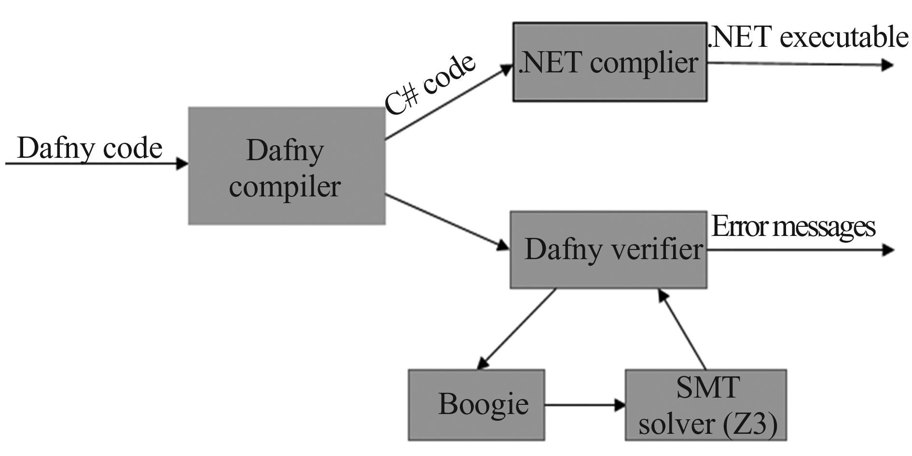

Verifying Imperative Programs With Dafny
Deductive Software VerificationBogdan Kyuchukov
Outline
- Why Dafny?
- Floyd Logic & Building Blocks of Dafny
- Recursion & Termination
- Inductive Datatypes
- Lemmas & Proofs
- Loop invariants
- Arrays & Searching
- Objects & Frames

- Designed as a verification-aware programming language, requiring verification along with code development
- Verifier is run as part of the compiler. As such, a programmer interacts with it the same way as with the static type checker
- Verifier is powered by Boogie and Z3. The general proof framework is that of Hoare logic
- From verified programs, the compiler can produce code for a number of different backends: the .NET platform via intermediate C# files, Java, Javascript, Go, and C++
- Dafny was designed by Rustan Leino at Microsoft Research after his previous work on developing ESC/Java and Spec#
- Author of the book Program Proofs
- Owner of Verification Corner YouTube channel


Because it's successfully being used in production by AWS
method Triple(x: int) returns (r: int)
requires 0 <= x
ensures r == 3 * x {
var y;
y := 2 * x;
r := x + y;
}
method Triple(x: int) returns (r: int)
requires 0 <= x
ensures r == 3 * x {
[ 0 <= x ==> 3 * x == x + 2 * x ]
[ forall y :: 3 * x == x + 2 * x ]
var y;
[ x + 2 * x == 3 * x ]
y := 2 * x;
[ x + y == 3 * x ]
r := x + y;
[ r == 3 * x ]
}
var t := Triple(u + 3);
var x’, r’;
x’ := u + 3;
assert 0 <= x'
assume r’ == 3 * x';
t := r’;
Q[t := 3 * (u + 3)]
[ u == 15 ] t := Triple(u + 3) [t == 54]
function Average(a: int, b: int): int
requires 0 <= a && 0 <= b {
(a + b) / 2
}
method Triple’(x: int) returns (r: int)
ensures Average(r, 3 * x) == 3 * x {
var y := 2 * x;
r := x + y;
}
predicate IsEven(x: int) {
x % 2 == 0
}
method IllegalAssignment() returns (y: int) {
ghost var x := 10;
y := 2 * x; // error: cannot assign to compiled
// variable using a ghost
}
ghost method DoubleQuadruple(x: int)
returns (a: int, b: int)
ensures a == 2 * x && b == 4 * x {
a := 2 * x;
b := 2 * a;
}
- Partial correctness: every terminating call is correct, but not all calls do indeed terminate
- Total correctness: partially correct and always terminates
- Termination metric: activation record callee < activation record caller
method PartialId(x: int) returns (y: int)
ensures y == x {
if x % 2 == 0 {
y := x;
} else {
y := PartialId(x); // error: failure to prove termination
}
}
function Fib(n: nat): nat {
if n < 2 then n else Fib(n - 2) + Fib(n - 1)
}
- is irreflexive: the relation never relates an element to itself
- is transitive: whenever a ≻ b and b ≻ c hold, then so does a ≻ c, for any a, b, and c
- the relation has no infinite descending chain